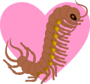

The database of Allelic Dosage-corrected Allele-Specific human Transcription factor binding sites
provides a genomic map of allele-specific binding at more than 300 thousand single-nucleotide polymorphisms constructed by meta-analysis of thousands of ChIP-Seq experiments,
click here.

PASIO: Poission segmentation for adaptive smoothing of genomic coverage profiles
Pasio is a software tool to simplify and denoise short read coverage profiles arising
from high-throughput sequencing data such as ChIP-Seq, DNase-Seq, ATAC-Seq and other -Seq experiments,
read more.
Papolarity is a Python package for analysis of positional biases in
transcript-level short read coverage profiles obtained by ribosome profiling (Ribo-Seq) or other transcriptomic -Seq data,
read more.